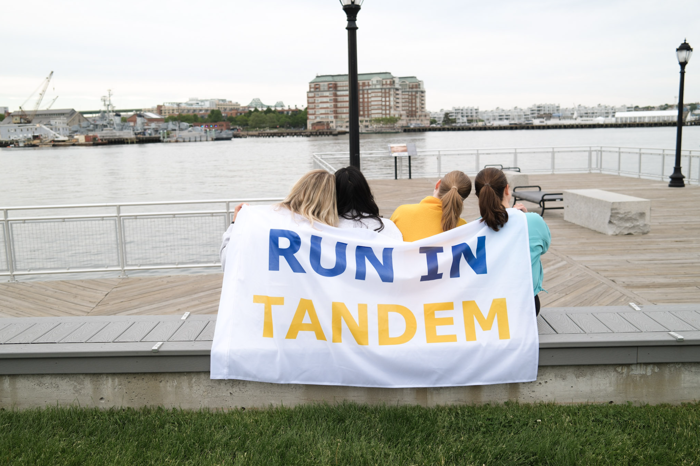
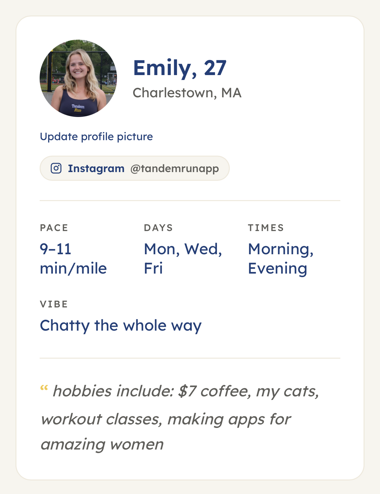
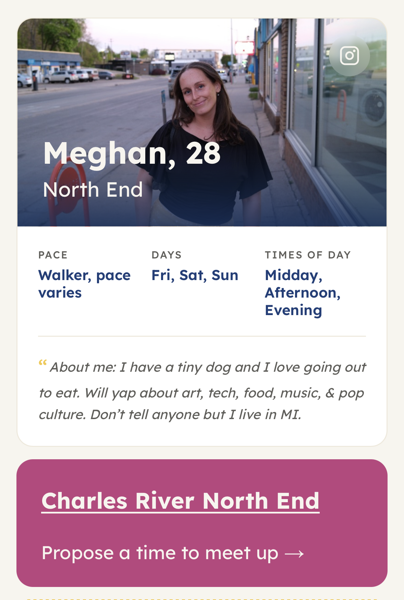
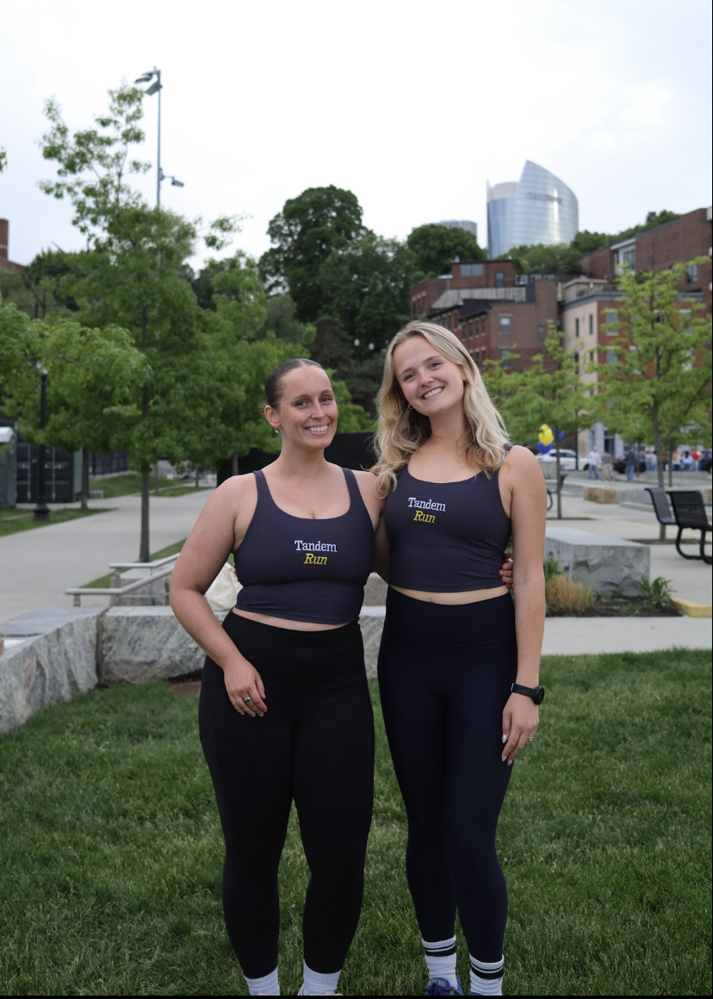

Because running is better as two
Tandem Run is a women-only running and walking buddy app launching in Boston Summer of 2026.
We match you with one perfect partner near you: same pace, same schedule, same vibe. We supply the routes, you just pick a time and show up.
join the waitlistWhere, when, and how (fast)
-
Build your profile
Neighborhood, pace, time of day, overall vibe. These are the details that will help us pick your perfect match.

-
Meet your match
We match you with one other highly compatible woman in your area. We supply one of our hand-curated routes.

-
Make it happen
Propose a time and then she accepts. Simple as that!
We love running in Tandem
We asked women why they love running with a buddy, here's what they had to say:

"I never wanted to do speed workouts until I had a friend to go with." — Emily.

"Running with girlfriends has provided not only great motivation but also lasting friendships!" — Julia.

"Running with friends helped me get out there on those below freezing days!" — Emma.

"There is no better feeling than crossing the finish line together." — Becca.

"Running with friends is always more fun than on my own. It's become such an important part of my day and something I genuinely look forward to!" — Emily.

"I am visually impaired and hard of hearing. I never thought of completing a 5k, now I look forward to running races and training with other women." — Casandra.

"I would've never signed up for my first half marathon if it weren't for a close friend pushing me to go for it." — Lorena.

"Race day is always 10x more fun with the friend you trained with!" — Allison.

"It's never easy starting a run alone. But running side by side with my gals gives me the motivation I need!" — Julia.
Built by women, for women.

Hi bestie <3
We're Meg and Em. We built Tandem Run because every woman deserves a buddy.
Run clubs are great, and we love Strava, but neither help you find that girl who is running at the same time, same pace, and same routes as you.
Whether you just moved to Boston, or have lived here your whole life, we want to help you find your perfect running or walking buddy!
Women only by design
Tandem Run is open to all who identify as women, including transgender women and nonbinary individuals who feel comfortable in a women-centered space.
Designed with safety in mind
We've thought carefully about safety from day one. Identity is verified through Persona, and we suggest meeting points in public, well-trafficked areas.
Inclusive of all abilities
Everyone is welcome, at any ability level, including guide running, wheelchair users, stroller-pushers and anyone who moves differently.
Get early access
We're launching in Boston Summer of 2026. We hope to bring Tandem Run to other cities across the U.S. Join the waitlist to get early access to the app, and community updates from the Tandem Founders.